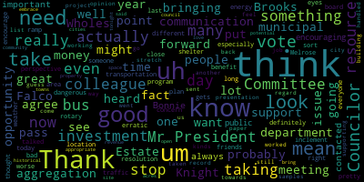

[SPEAKER_14]: Councilor DelaRusso? Present. Councilor Falco? Present. Councilor Night? Councilor Kern?
[SPEAKER_06]: Yes.
[SPEAKER_14]: Vice President Marks? Present. Councilor Scott Kelly? Present. President Caviello?
[Caraviello]: Present. Please rise and salute the flag. I pledge allegiance to the flag of the United States of America, and to the republic for which it stands, one nation, under God, indivisible, with liberty and justice for all. Motions, orders, and resolutions. Councilor Del Rosso.
[Dello Russo]: Before we begin, may I just make one brief indication here? Due to the intervention of this Medford City Council, the comment period was extended with the Secretary of Energy and Environmental Affairs and the Executive Office of Energy and Environmental Affairs regarding the Green Line extension notice of project change. And so there is an additional A couple weeks, people have, they should check out the resources and to their new deadline. And their comments for the environmental impact on the Green Line extension to the parkway may be sent to the MEPA office, EEA number 13886, 100 Cambridge Street, Suite 900, Boston, Massachusetts, 02114. Thank you, Councilor Del Rosario.
[Caraviello]: If the messenger could make a few copies of this to maybe some people in the audience, it would be appreciated. Thank you, Councilor Dela Ruzzo. And that'll also be posted on the website. Did you want to make a comment? Name and address for the record, please. Hold on one second.
[Ducey]: Mary Anna Ducey, 2 North Street, Meffitt. I spoke before the council last week about this issue, about the non-notification. And because of the intercession of the council, we got the deadline pushed back to December 12th. However, I have one other question. You know, I mentioned last week that I knocked on 150 doors to inform people about the meeting that didn't know about it. So now, those 150 people don't know about the extension of the deadline for the comments. So it is a long address and Councilor De La Ruza just read it off, but I was wondering if you people had any suggestions on how you could get that.
[Caraviello]: It will be on the city website also.
[Ducey]: Yeah, but people need to know to go there. You see, we have to, people don't know that the deadline has been extended. So.
[Caraviello]: Point of information, Councilor Longo-Kurin.
[Lungo-Koehn]: I think maybe we could do a reverse 911 call to go out, request to go out tomorrow or the next day to notify people that there is the extension, where to send the letters, and also go on the city website if you want more information.
[Ducey]: Right, that might be, I was thinking of that also. You could probably, on the government access channel where you post the street sweeping session, you could probably post a notice there as well. I think that would be a good idea if you could do that. And going forward, and a newspaper notice. I don't know if the T or the city is planning on any kind of newspaper notice. We'll have to see about that. But going forward, I appreciate the efforts that the council made on behalf of the residents. And I urge you all to please stay involved with this project because it's been a long drawn out thing and advocate for resident involvements. The city, I think, down the road, needs to have a dedicated meeting for our butters and those directly affected in the neighborhoods that are adjacent to the track, because there are a lot of new people who have moved in. This project has been going on for 12 years. And those new people who have come in the neighborhood, some of them don't even know what this is all about. I think the city should try to get those abutters together and bring them up to date of what's going on, what the future is, what the city has planned, if there's economic development, where it is, who it's going to involve, and so forth. And my offer stands that I gave you people last week. I'd be glad to lead a walking tour through the neighborhoods for both the council and the mayor. Because a picture is worth a thousand words. If you can see what it is we're talking about, you have a better appreciation of what's going on. So thank you for your time and thank you for your advocacy. And you know, you may see me again if we have another issue. Thank you very much. Thank you.
[Lungo-Koehn]: If I may through the chair, I just want to thank the speaker and all those that spoke last week. There was about five people here. advocating for the extension of the common period and their ability to get notification. I think that's important and they're doing it for hundreds of people in that neighborhood. So I would just ask that we take a roll call vote, that a reverse 911 call go out tomorrow, notifying not only everybody in that neighborhood, but the entire city that there's a common period has been extended, the date, list the date and the address.
[Caraviello]: Thank you. On the motion by Council Member Kern. Councilor DelaRusso.
[Dello Russo]: That the city administration notify the project manager to increase mailing in the Butters neighborhoods.
[Caraviello]: On the motion by Councilor Langel-Kern, as amended by Councilor DelaRusso, seconded by Councilor Falco. All those in favor? Aye. Motion passes. 17-778, offered by Vice President Mox, be it resolved that the MBTA install a bus shelter at the bus stop on South Porter Road at Roosevelt Circle Rotary in the interest of public safety. Vice President Mox.
[Marks]: Mr. President, I know on the agenda also Councilor Scott Pelly has a similar paper, if you'd like to read that also.
[Caraviello]: Let's see. 1779, offered by Councilor Scott Pelly, being resolved the city administration reach out to the MBTA to inquire about placing a bus shelter at the bus stop located at Southwater Road in Roosevelt Circle. Vice President Mox, continue.
[Marks]: Thank you, Mr. President. And I was recently contacted by a resident that happens to take that bus. If anyone's familiar, this bus stop is located on South Porter Road at the intersection of Roosevelt Circle. If you're not familiar with it, it's the picnic bench that's been out there for some time now that is considered the bus stop. And this particular resident contacted me, said not only is this bus stop kind of in a bad area, being placed around the Rotary at Roosevelt Circle, which is a highly traveled and fast-paced area, but the fact that there's a picnic bench there does not lend itself to public transportation. and or discourages people from using that as a legit bus shelter stop. And this particular location would be a prime location for a bus shelter. to protect residents that use that, I believe the 325 and the 100 bus both go by that location. And it would protect residents and commuters from the rain and snow and the inclement weather. It also, Mr. President, in my opinion, would increase ridership at that particular location. And Rep Donato reached out to me just recently and said he's been working with some of the residents in that particular area that contacted his office to erect a bus shelter. And the MBTA told them they do a ridership count, and they recently performed one. and said roughly 28 people use that particular bus stop. And the MBTA will not consider a bus shelter unless it's 50 or more people that use it. But what I think, Mr. President, is the old issue that you have a shelter or a bus stop that's located in really a poor area in regards to traffic flow and so forth. and safety of commuters. And it also discourages people from standing there waiting to catch the bus. So hence why the numbers of ridership may be down based on that current location, based on the fact that there's not a shelter that makes it look like, hey, this is a legit bus stop, rather than you're out there having a picnic off of 93 at a picnic bench. So I would ask, Mr. President, that This council send a request to the MBTA to erect a bus shelter at South Border Road at the intersection of Roosevelt Rotary in the interest of public safety, which services riders on the 325 and 100 bus, Mr. President. We may also have a resident here. I don't know if Barney's here tonight. She said she was going to come. And if we can also listen to Bonnie, who wants to speak on the issue, Mr. President.
[Scarpelli]: Thank you. Councilor Scott Billy. Thank you, Councilor. Mr. President, Councilor Moxwell, reiterating what, I don't want to be redundant. You brought up the same points. I think that in today's, um, Studies have shown that we want more people off the street and out of cars. And when we're prohibiting people or welcoming people to their nearest bus stop, I think that's exactly what we're doing. We're limiting them from using public transportation. So I second the resolve from Council Marks and I'd like to put a timeline to that, that we get a response back within two weeks if we can, and if not, I want to send this to subcommittee and ask, I want to give it to the timeline, give it a few weeks, and then what I'd like to do if we don't have the proper response, I'd like to hold a subcommittee meeting with the representative from the T. If that doesn't, if we don't get, information back, because we know the lack of communications from the MBTA has been with this body. So I think that we need to hold their feet to the fire. And when you talk about that one area, it's a dangerous area. And to put a picnic bench out there, it's it's disheartening when you talk to some of those neighbors that see what might happen, uh, what goes on in that area and a negative note when, um, when there is, when they, when they are waiting in between buses. So, um, I second the resolve from, uh, council marks and, um, amended, uh, well, to see if we can put that within two weeks if we can, um, an answer back within two weeks. Thank you. Thank you.
[Falco]: Councilor Falco. Thank you, Mr. President. I was also contacted by Bonnie as well. And I thank my colleagues for bringing this forward. Um, this is a very important issue and we should always be encouraging people to take public transportation. And I think that this, um, doing this, I think does encourage people to, um, to, to, uh, look at, uh, taking the bus. I, myself, I've been taking the 325 for probably close to 20 years now. And, uh, I've been taking the, for a long time, and I don't get on at that stop, but I do have friends that actually get on the bus at that stop, and I had talked to many of them today that they do get on at that location, and it is a concern. That can be a very dangerous stop. It's right at the rotary and an off ramp, and especially during the inclement weather, traffic can be pretty erratic on a good day, but I think on a bad day, it gets even worse. So I think some sort of a bus shelter in that area would benefit everyone. So I definitely support this resolution, and I thank my colleagues for bringing it forward. Thank you.
[Lungo-Koehn]: Council Member O'Karn. Thank you. President Carviello, I just want to thank my colleagues also for bringing this forward. It is a concerning spot. There is nothing at that location to shield anybody from any elements. I think the location of it definitely discourages residents that live in the Lawrence Estates and those who would use that transportation spot, I think it definitely deters. The use in a bus shelter would go such a long way, and I think it would encourage many, many more residents in this community to stop using their cars, to drive into Wellington Park and take the T, and definitely use the bus. I think it's definitely needed, and I agree with giving a few weeks to at least get some sort of response and seeing what we can do as a community. Hopefully the mayor can get on board trying to push the MBTA with us to create a shelter there. I think it's extremely important and I agree wholeheartedly. So I second the approval. Thank you.
[Knight]: Councillor Knight. Mr. President, thank you very much. I think we're all in agreement that we understand and value the importance of a bus shelter, especially at this location. And the task that's before us here is how are we going to get it put there? And Councilman Scott Pelley made a great recommendation to send it to the MBTA. I'd like to amend the paper and also have it sent to the administration, Mr. President. And I'd like to ask the administration to discuss mitigation strategies in relation to the number of mass DOT projects that are going on in the community to help fund this. some impact going on with the erection of the cell phone towers. We have some impact going on with the extension of the Green Line. We have some impact going on with the development of the Craddock Bridge that are all under MassDOT control, Mr. President. And it's not unusual when projects are going on in communities that mitigation of this sort is extended. So I'd also like to ask that the paper be sent to the administration with the request that they discuss mitigation with the MassDOT to provide funding or construction of such.
[Caraviello]: Thank you. On the motion by Vice President Mox and Councilor Scott Pelley. All those in favor? I'm sorry? Do we have someone that wants to speak? Oh, I'm sorry. I can't. I couldn't see the process.
[Styer]: Hi, my name is Bonnie Styer. I live at 35 Roosevelt Road, just a couple blocks away from this bus shelter. Thank you, council members, for your prompt and considerable response to my concern about this bus shelter. I do believe that it would be really helpful to have a bus shelter there. I think it would increase the ridership. I think this bus stop, well the bus, the 325 and the 100 bus are wonderful ways to get into Boston on a daily basis. And I think that more riders would be encouraged to take it if there was a shelter there in place. Again, like you mentioned earlier, It's very busy there and now that I'm leaving in the morning when it's, you know, the sun was rising at 6.50, being there in the dark is not a very great place to be with all those cars moving during the rush hour time. So I appreciate all of your assistance and I'd be more than willing to help out with getting signatures or petition should the MBT need something like that. So thank you again.
[Caraviello]: Thank you. On the motion by Vice President Mox and Councilor Scott Pellicott. Vice President Mox.
[Marks]: Just if I could, and I've brought up this fact a number of times, the MBTA assesses this city, the city of Meffitt, over I believe it's $3 million a year to operate the MBTA in this community. And we all pay for it as riders. We pay through the sales tax. There's a percent that goes towards the operation of transit in this state. And I think, Mr. President, I believe we're in the top maybe five or six in assessment in this state from the MBTA. That money comes right off our cherry sheet. So it's money that goes right out of the city coffers, and it's based on services they're providing. And I would state, Mr. President, that we need to take a long, hard look at many of our bus stops, many of the shelters that do exist in the city, the creation of not just this shelter, but many other shelters in prime locations. In the square, you have bus stops that hundreds of residents wait on a daily basis to take the bus there, and there's no shelters. You know, I think the T has to do a better job, Mr. President, in this community, and I'm hoping, like Councilor Scott Pelly, that we get a quick response to this issue. And also, Mr. President, based on the fact that We're one of a few communities that are paying such a heavy fee to have bus transportation, which is great. I like John Falco. take the bus every day also. But I can tell you, Mr. President, the access that we get in this community is not just for Method residents. We're paying a hefty fee to make sure people from all surrounding communities that jump on our express bus and all the other transit methods that we have, we're paying for their ridership as well, Mr. President. And I think, really, we need to make sure that the MBTA sees fit to make sure this community is getting its fair share.
[Caraviello]: Thank you, Mr. Vice president. Counselor Knight.
[Knight]: Mr. President. Yes. Also where the MBTA is a quasi public agency underneath the mass dot umbrella. I think it will be appropriate to amend the paper further and ask that this also be sent to a state delegation. So they're aware of the request that the council's making.
[Caraviello]: Thank you. On the motion by vice president mocks and counselor Scott Pelley as amended by counselor night. seconded by Councilor Falco.
[Marks]: Roll call vote, Mr. President.
[Caraviello]: Roll call vote has been requested. Mr. Clerk, please call the roll. They're both together, 1779 and 1778, as amended by Councilor Knight.
[SPEAKER_14]: Councilor DelaRusso? Yes. Councilor Fevella? Yes. Councilor Night? Yes. Councilor Locker? Yes. Vice-President Marks? Yes. Councilor Scarpelli? Yes. President Caviello?
[Caraviello]: Yes. Seven in the affirmative, none in the negative, motion passes. 17-780 offered by Councilor Locker, be it resolved that the administration through the Energy and Environment Office develop a database and start an opt-out list for those who want to opt out of any potentially implemented community aggregation plans. Councilor Lungo-Kern.
[Lungo-Koehn]: Thank you, President Carviello. I think the council in the last year or so has learned a great deal about community aggregation. We've had a number of meetings relating to it, and we also have had a very informative meeting back, I believe, in September with the energy environment director in Melrose, which I think, personally, for me, helped answer a lot of my questions. And it was great to see another community and how the plan is succeeding. I think one concern I do have is just Medford's ability to notify people of their rights and the ability to opt out. And when I do get emails or phone calls or people stop me in the street to talk about community aggregation, 80% want to move forward with it and implement it in the city of Medford. But there are some, a good 20% if I, just going off the people that contact me, there are people that don't want government telling them what to do, what plan to go into, and they too are concerned that this 30-day opt-out, when it does become available, if potentially the council is to vote for it, there's just many concerns. They want to make sure that that opt-out plan is well publicized, and people know how to do it, and where to go, and who to talk to, who to ask questions to. And one resident brought this up to me, and we discussed it in depth. What if an opt-out plan was implemented, just even a database, a list of people that would relieve some of the 20% that I'm calculating from the people that I talk to, relieve them of their fears, and let them know that, no, we're not going to hide the fact that you can opt out. If you want to, you can do it now, just in case something is implemented. I know it's a reach, but it's something that was requested by a resident, and I don't think it's a bad idea. I think the community aggregation is something that we're going to talk about within the next several months. And we just need to be ready on all accounts. So I move this forward. I think it's definitely something worth exploring. It's simple. It's just a database. It could be an Excel spreadsheet of people that want to be listed as not being involved in this community aggregation from the get-go, and it would give a peace of mind to those who are not interested, and maybe it would help us get the votes, maybe unanimous, maybe not, but it would get votes to implement the plan, which I know a large percentage of Medford wants to work on and work towards.
[Scarpelli]: Thank you. Councilor Scott Pelli. Thank you, Mr. President. Thank you, my colleague, for bringing this forward. I know that months and months and months ago when we first were presented, I was one of the councils that voted against it because of the lack of information that went out to our constituencies, to our community, and with the opt-out. in discussions with neighbors, where neighbors that have been very conscious about purchasing their own energy and they're valid in understanding what the situation was. And when I did my homework in visiting a few communities, one of the biggest pluses were The plan that was put in place once it was passed by each community, and the plan that notified our residents about the value of this process and the option of opting out. So one other thing that I want to point out, question that came about was who would fund the notifications, all of the work that needed to be done to let all of our residents know about the opt-out. And with our last meeting and having the director from Melrose who came in and spoke so well on this issue, we answered a lot of questions that were brought to my attention that people had asked me about and how would we find out who would pay. Well, it all comes under the company that would be awarded this project if and when it happens. So my biggest concern wasn't the community aggregation plan because I think it's needed. I think it's something that every constituent can use in bringing their electricity bill down. I mean, not dramatically, but it does help. And again, the biggest piece was getting the notification out to our residents. And I was pleasantly surprised and optimistic now in making sure that When that plan is released to the public, it's going to be very thorough and with as much information and time needed for our residents to opt out. Because again, one of the issues we often hear is a lack of notification. Well, with this plan, it falls back on the company that's awarded this project. So that in turn goes back out to our residents. I appreciate Councilor Longo-Curran for bringing this up, and I second her motion.
[Caraviello]: Thank you, Councilor Scott-Bailey.
[Knight]: Councilor Knight. Mr. President, thank you very much. When it comes to municipal aggregation, this is a topic that I think we've been discussing now for over a year. And quite frankly, the ball's in the council's court to determine whether or not this is something that we're going to allow the city to explore. And again, I think the time to move forward on it is now. Ultimately, the question is, do we want to request the department head to dedicate resources to something that hasn't been approved yet by this council. We're asking a department head to say, start creating a list. We may or may not adopt municipal aggregation. And I think we're putting the cart before the horse, Mr. President. If we want to explore municipal aggregation, let's explore municipal aggregation. Let's take the vote and let's allow it to happen. But to dedicate resources to something that may or may not happen, I don't feel comfortable doing that. the Director of Energy and Environment to start to begin to create an opt-out list. So she's going to dedicate resources in her office towards something that we may not adopt. So I think that this might be a little bit counterintuitive at this point in time. Mr. President, I'll have a difficult time supporting it this evening.
[Falco]: Thank you. Councilor Falco. Thank you, Mr. President. As many of you know, I've been on board with municipal aggregation since day one. I think it's a good, in my eyes, I think it's a good a good plan, I think it's a good program. And I, I too think that, you know, we're at the point now where, you know, I think we've heard from, you know, you know, at the last meeting we heard from someone from the energy department in Melrose just to get a different perspective. And I think, I thought that was a very good presentation. She did a great job and it was good to see how another city handled the communication and how they worked through the project. And she had all kinds of samples of communications that they sent out. But I, in fact, I also agree with the Councilor Knight. I think we need to take a vote on this to see where we're going. You know, I mean, I would, I guess I feel the same way. I mean, I don't want to put resources working on something that might not even pass. So, you know, I think, you know, it's time. This has been, I think municipal aggregation has been with us for over a year now. We've had many meetings, Committee of the Wholes, we've taken one vote, it went down, and it's come back, but I think we need to take a vote on this. And I know, I think the paper is still in committee, or actually it's in Committee of the Wholes, so I think we probably need to vote that out at some point. But I think that, in my opinion, I really don't, I think a lot of our departments to stretch with regard to resources. And I would, I really don't, um, like the fact that we're going to put a resource towards building this list if this might not even pass. So, um, I, I, uh, agree with my colleague, uh, councilor Knight on this issue. So thank you.
[Caraviello]: Thank you. Councilor DelaRusso.
[Dello Russo]: Thank you, Mr. President. Um, every presentation we've had on this matter from the office of energy and environment, which has been, they've been excellent presentations. It's quite clear to me that the Office of Energy and Environment has an agenda. Their agenda is to get METFIT into municipal aggregation. And so every presentation we've had has told us how wonderful and awesome and stupendous of an idea this is. And maybe indeed it is, but we haven't had one credible, balanced presentation of what the negatives are with it, Mr. President. And a lot of people are concerned about that in the community. A lot of people think that it would be a good idea that we have, rather than an opt out, an opt in. So the city offers it, and if people in the community want to do that and get together and do it, then they should opt in. Now obviously the vendors have something to benefit from by getting the greater portion of the community involved in this. They have something to gain. Obviously, always someone has something to gain, and there's nothing wrong with that. I think this is a stretch in some areas, and I'm particularly concerned, Mr. President, that we'd create a list in advance of people who don't want to participate in this, who don't want to be a member of this. What does this do to them? Does this target them in some way? Who has an access to this list? Are they going to be contacted and given a spiel to get them to come aboard? Um, these are questions, uh, serious questions that I have. These are serious questions that people in the community have, Mr. President, that they need a voice as well. I'm going to give them that voice. And so I do not support this motion, Mr. President. I think we need to have further discussion on municipal, uh, aggregation. And I think we need to have a credible, bona fide expert on this matter who is going to give the argument contra. Thank you, Mr. President.
[Caraviello]: Thank you, Mr. Counselor. Counselor Lugo-Curran.
[Lungo-Koehn]: Thank you, President Carviello. I understand the sentiments of my colleagues. I just, I don't feel, I have to just speak again on it, I guess. I don't feel that it would take a great amount of resources to start an Excel spreadsheet and people call or write in, shoot a quick email to say they want to be on the opt-out list. I actually think that it would ease a lot of people's fears, those that definitely do not want to be part of this. I think it's simple, take minutes. And I agree with Councilor DelaRusso, there is an agenda for the Office of Environment and Energy, but I don't think that that's what the people are concerned about, that the agenda won't be notifying people accordingly on their option to opt out, how many days they have to do it, and the fact that they can opt out whenever, they're going to be put in if they don't opt out within that first 30 days. And that's what people are concerned about. So that's why you would implement something like this far beforehand, and you would be able to create that list, and people would be able to say, I want to opt out, and they would get what they want. The people that don't want to be involved would be able to do that sooner than later. And when the council does meet in committee of the whole again, maybe there would be the definite votes for it. And I think we're definitely close to it. And I know people have definitely changed their minds. And they've learned a lot. There are some people that maybe are still against it. But for me, this is something that would make me feel a whole lot better knowing that they have more than that 30 days. Because that's the complaints I've been getting. And I thought this was just a way sway another vote towards approving it and ease in people's fears. I'll say it again. So I move approval. I'd like to see how it goes. And of course, we'll be meeting on it again in Committee of the Whole, probably after the holidays.
[Caraviello]: Thank you, Councilor Locario.
[Marks]: Vice President Mox. Thank you, Mr. President. I can't support this resolution tonight based on the fact that I agree with my colleagues that this is something that hasn't been approved by the council as of yet. And I'm not going to partake in something that is going to tell residents that they can get out of something that the council is going to vote on. Um, and in my opinion, what we should do, and I've stated this from day one, Mr. President is, uh, the energy and environment committee where this was sent at one point in this process, um, had a public hearing on it and we asked the city solicitor to attend. And one of the questions, and it was actually my question was whether or not we can file a home rule petition on behalf of this city and change the legislation, which, uh, is everyone is opted into the program. And, um, automatically and change it so you can opt into the program. And according to Mark Rumley, and I don't want to put words in his mouth, he spoke to House Counsel at the statehouse and they believe that we could file a home loan petition. And that is my number one concern. In my opinion, when you get into utilities, that's between a homeowner and the utility company, not between the homeowner, the utility company, and the city of Meffitt. I don't think we have any business getting involved, to be quite honest with you. I realize this is a good intention to reduce our carbon footprint. I realize that supposedly there's a cost benefit to by aggregating everyone together. And so I realize what the intent is. But I, as one member of the council, don't feel that everyone should be opted in automatically to a program. And if this is such a great program, It's going to be overwhelming. People will be knocking on the door here at City Hall to get involved and say, I want to opt into that program. Let the program work. Let the program work. So that would be my recommendation. Mr. President, that eventually, when we do discuss this again, that we file a home rule petition to reverse it, Mr. President, because the state legislature made a mistake, in my opinion. Maybe it wasn't a mistake. Maybe it was intentional that they realized that, you know, a good majority of the people aren't going to opt out of the program, leaving them in the program, and that's where they're going to get their numbers from. That's why they intended it and crafted the legislation that way. I don't believe that should be the case. I believe we should give residents of this community an option. If they want to opt into the program, then so be it. You can opt into the program, and I hope you save money, and I hope we move forward to reducing our carbon footprint, Mr. President. There's also a section that I understand within this legislation that also allows a community to purchase more green energy. And you can do it on a one-to-one basis, but the community can decide as a community, saying, you know what, the 15% that we're required to buy, you know, we want to up it to 25 or 30%. Now that's going to be a cost to everyone else in the community. And you can opt out of that also. But now you say you can opt out of the program. And if you happen not to opt out of the program, then if you don't want to pay the additional green energy, you have to opt out of that. That's be up front with the people. Let them choose whether they want to partake in this program. And I could support that, Mr. President. So I can't support this resolution tonight because we haven't voted on any type of aggregation the way it stands.
[Caraviello]: Thank you, Mr. Vice President. On the motion by Councilor Alongo Kern, seconded by, name and address of the record, please.
[Castagnetti]: Thank you. Andrew Castanetti, Cushing Street. Good evening, honorable counselors. I'm not against the energy, especially clean energy. And if I may get a little bit off track, supposedly this country sent man to the moon a dozen times and brought him back safely. If that's true, there's no excuse for us to be burning fossil fuels, period. There's only a good reason, I'm sure, and that's capitalism from down deep in Texas. And also, I believe Tesla, the famous inventor from Yugoslavia, was creating a power grid over 80 years ago, backed by J.P. Morgan, I believe. And once J.P. Morgan found out that Tesla wanted to give free energy from power plant to power plant without wires, mind you, he pulled the plug. So, so much for capitalism. This community aggregation, I'm not sure if it's a good or bad thing. I don't know what's in it for the city. I don't know why they would force undemocratically to pull all, I'm estimating, 40,000 National Grid electric ratepayers into the pool and making them opt out if they want to get out, which means they have to be proactive or, as I would say, reactive. And very well could be, instead of me paying $0.10 for the delivery charge on my electric bill, it could come in at $0.16. I'm hearing different numbers. That would be a 60% increase in my electric bill on the delivery charge only. So if I'm using an average of 400 kilowatts times $0.06 extra, that would be approximately $25, $26 extra. And so a lot of people may be having a hard time paying the electric bills as we speak. So I just hope this community aggregation does not become community aggravation.
[Caraviello]: Thank you. Thank you. On the motion by Councilor Langel-Kernan, seconded by? Seconded by Councilor Scott Pelli. All those in favor? All those opposed?
[Clerk]: Motion fails.
[Caraviello]: Councilor Langel-Kern was in favor. And George, and Councilor Scott Pelli. 17781 offered by Councilor Langel-Kern, be it resolved that the administration look into replacing with the help of Eversource, all lead pipes and outdated pipes that need an upgrade while the streets will be open during the construction period if the Eversource project is approved. Councilor Longo-Kern.
[Lungo-Koehn]: Thank you, President Carviello. We had met with Eversource last week and I know that a number of councilors asked questions with regards to the water pipes that are going to be closely Doug Nair above or beside the Eversource pipes, and I know a number of ours are, we all know, they're 100 plus years old, and they are in need of replacement. Now, I forget which councilor, but we all pushed to try to get Eversource to replace our water pipes, and they said they would approach it on a case-by-case basis. I just wanna make sure that the city administration really is on top of that. I know Cassandra is going to be on top of it. She seemed very eager to get Eversource to pay for the majority of this work, but they wouldn't commit to it. So I think it's very important that the administration really keeps a solid eye on this and whether or not Eversource replaces the water pipes that are going to need replacing, that we We look into doing this, whether this, in funding I'm sure is going to have to be appropriated. So we think about this before our streets are even open. And I don't know if the administration has already thought about that. Obviously, I understand we're going to try to get Eversource to pay for as much as possible. But no matter what, I think these pipes need replacing. And I think we need to definitely be proactive in making sure they do get replaced. couple miles worth of digging up that Eversource is going to do in our streets. I think this should be paid for by Eversource, but our residents definitely deserve our infrastructure to be replaced. And when the street's being dug up, I think it's important that we do it then. So whatever we have to do to get Eversource to pay for as much as possible and the city come up with the rest, I think it's important, especially if we go in there and we find very old piping.
[Caraviello]: Thank you. On the motion by Councilor Lococo, seconded by Councilor Falco. All those in favor? Aye. Motion passes. Reports of committee 17766, committee of the whole meeting from November 14th, 2017 regarding Enstar Eversource. And I have the report here which I will read. The purpose of the meeting was to receive a presentation from Eversource on their request for grants of location on the transmission project from moving through Medford. The following recommendations were made. That one, a traffic plan be submitted to the council and the police chief. Two, construction schedule with start dates, days of weeks, and times be submitted. Three, that Eversource set up an informational meeting at the high school to include the winter street residents in a budding neighborhoods for that a contact name for the project with a telephone number and email be posted to the city's website. Five that plans be provided by ever source on route on the route from question street to the city line that were included seven Eversource develop a regional communication plan. That plan would entail them developing a strategy of contacting TV and radio station, notifying non-Method residents about the project, and to notify them of alternate routes. A motion was made by council tonight to send this report out.
[Lungo-Koehn]: Let me answer.
[Caraviello]: Vice President Mox.
[Marks]: Was there a number six on that?
[Caraviello]: There was another missing somewhere along the line. I think there was only supposed to be seven and it ended up being eight.
[Marks]: No, I, okay. I thought a number. Yeah, no, they were saying if I'm not mistaken, as part of what council Longo just spoke about, um, I think I offered the motion during that meeting that, uh, as part of their detailed plan, that they also include, uh, the water hookups throughout the entire route. And we asked that that be provided to us at our next meeting. And I think, uh, representatives from Eversource said, We can't possibly get that information this quickly and so forth, but it was still a request of this council to get a plan of each hookup that they're going to be crossing over or under, water hookups.
[Caraviello]: Was that the meeting from last week or the week before?
[Marks]: Last week.
[Caraviello]: It was last week. This is from two weeks ago.
[Marks]: Okay, so we're not gonna, are we gonna get the next paper before next Tuesday's meeting?
[Caraviello]: Okay, so those questions will come out again. Yes. Well, our questions still go somewhere, right?
[Marks]: When we ask, I mean, Eversource was before us. We asked Eversource to produce some information.
[Clerk]: Are you saying that information doesn't go anywhere?
[Caraviello]: Next week, when we meet next week with them again, we'll bring it up to them again. OK.
[Clerk]: OK.
[Knight]: Councilor Neistat. So this is, Mr. President, when we met with Evisuos, one of the things that Councilor Marks brought up was that there's a memorandum of understanding that was negotiated for mitigation. And that this isn't related to that meeting then. Because one of the requests that Councilor Marks made was that the items that were brought to the table and denied, we wanted to know what those were as well.
[Caraviello]: Absolutely.
[Knight]: Yeah. So this is for the previous meeting, not the meeting that we just had the other day. OK. Sounds good to me.
[Marks]: But we may not get that information before next Tuesday. This issue is coming up again, correct? Yes, it is. So we may not get that information prior to next Tuesday's meeting. That's an issue. That's why I thought this was part of the paper that we were reading that included everything.
[Scarpelli]: I believe we tabled it because they didn't they couldn't complete all the questions we had and they didn't get to to explain their whole Communication plan.
[Caraviello]: Yeah, we only got halfway through right halfway through.
[Scarpelli]: I think that's a and then we're completing it next week So is there a way that we can get? Maybe the city engineer can give us some information.
[Caraviello]: All right OK, Mr. Clerk, if you could have this letter sent up to the city engineer. Maybe she can help us out before the next week's meeting with that.
[Knight]: If I may, Mr. President, I think the best approach would be to send it to Mr. Zamparelli from Eversource, who's the government relations person.
[Clerk]: Mr. Clerk, if you could take care of that, please. Thank you. On the motion by Councilor DelaRusso.
[Knight]: I believe I still have the floor, Mr. President. I'm sorry? I believe I still have the floor. I'm sorry, Mr. President. So we negotiated a memorandum of understanding. And as I understand the process, based upon my discussions, is that the Department of Public Utilities has approved the project's specifications in terms of the cost, the route. the stretch that it's going to go. And the MOU was negotiated between the chief negotiator and the utility company for mitigation. And what comes before us is the grant for access for right away to put the vaults in. If we fail to approve those vaults, then the next step in the process would be that Eversource would appeal to the Department of Public Utilities because they're the ones that approved the project plan. And then the question comes as to whether or not DPU agrees to allow them to proceed. And if they do, then the terms of the MOU, I believe, become null and void. So that's a concern that we have as well. So I think that that's something that we need to ask the city solicitor at the next meeting is whether or not the terms of the MOU become null and void if the grants right away aren't approved and DPU has to step in.
[Marks]: Vice President Mox. I appreciate Councilman Light sharing that information and knowing that any approval comes before the mayor and also the council as a two-pronged approach, it would be very helpful maybe in future projects that the administration sit down with this council and say, you know, we're crafting an MOU, memorandum of understanding. You have partial approval of the streets. What are your thoughts? And that would have been helpful, Mr. President. So now we're after the fact negotiating with the utility company that has already entered into an agreement with the city administration. And in my opinion, I think we have every authority, otherwise it would be just a rubber stamp body just approving things to put conditions on this, Mr. President, that make sense to the rate payers and the tax payers of this community. When you have a project coming into a city that has zero benefit to this community, I say zero benefit. and 100% disruption, I think we have every right to stand up on behalf of the residents of this community. So I look forward to speaking with the city solicitor on this.
[Caraviello]: Thank you, Mr. Vice President. Mr. President. Councilor LaRusso. Motion that the paper be received. On the motion by Councilor De La Ruta, that the paper be received, seconded by Councilor Knight. All those in favor? Aye. Motion passes.
[Dello Russo]: Mr. President, while we're nearing the end of the meeting, may I make a motion for suspension of the rules to address a tabled matter? Yes, you may. Mr. President, motion to suspend the rules to take up paper 17-764, request of the mayor to take 200 grand from free cash for the plight of the people of Brooks Estate. Would you like me to read the communication? I wish you wouldn't, Mr. President. We debated it extensively last week and we had a lot of words from those in favor from the gallery, Mr. President.
[Caraviello]: Okay, move approval. On the motion by Councilor Dela Russa to take Under suspension, to take this paper 17764 off the table, seconded by Councilor Falco. All those in favor? Aye. Motion passes. Motion for approval on the paper, Mr. President. On the motion by Councilor DelaRusso on the paper, seconded by Councilor Falco. Mr. Clerk, please call. Mr. President. Councilor Mox, Vice President Mox.
[Marks]: Thank you, Mr. President. As the financial steward of this community, as we are as a body, and the mayor is coming before us requesting $200,000 of taxpayers' money, I would ask that the administration answer a few questions regarding this money, Mr. President.
[Caraviello]: And what questions would they be, Mr. Vice President?
[Marks]: Well, if the administration appears before the podium, Mr. President, I'd be more than happy to relay my questions.
[Caraviello]: Obviously, we have no one from the administration here this evening to answer those questions. Mr. Vice President.
[Marks]: So the mayor is presenting a paper, Mr. President, a financial paper, and not one person could take the time out of their schedule to come up before the council to answer a question regarding taxpayers' money. I just want the record to reflect that, Mr. President. that not one person from the city administration was here last week, and they had ample opportunity because it was tabled for a week, or here tonight, Mr. President, to answer one question on behalf of the taxpayers of this community. But, Mr. President, I still will ask my questions. I posed last week, and many of them, as representatives from the Brooks Estates quite eloquently stated, is not under the ability wig to answer why we don't have a capital plan in this community. And I can appreciate the fact that representatives from the Brooks Estates, all volunteers that have been doing tremendous work to keep that building and the carriage house afloat for so many years, and actually moved towards the rehabilitation of the manor and the property, have done great work, Mr. President. My concern, and I reiterated this last week, is not with the Brooks Estates, is not with shoring up a building that I witnessed just recently as a building that's on the verge of collapse. I agree with that. I don't think anyone else could go over into that area or that building and say this building is not going to come down very shortly. I think we all agree with it. My concern, Mr President, is why don't we have a game plan in this community on capital improvement? This is one issue. There are a laundry list of issues that we need a capital plan for. Last week, I mentioned the fire departments. Each fire station has dire need, Mr. President, for upgrades and renovation in the fire stations where our brave men and women spend seven days a week, 24 hours a day. That is one aspect that needs a capital plan. We're not going to be able to do that work within the confines of our budget. And I think we can all appreciate that. Over the last several years, every member of this council has spoken about the poor condition of our sidewalks and our roads. And based on over the years, that information, this city has put zero dollars for road replacement in the budget. $0. The only money we get for road replacement is through Chapter 90 money through the state. It's about $980,000 a year, which is not going to be enough to start even remotely replacing and repaving the streets we know we need in this community. We're never going to get ahead of the game in the way we're doing business. We need a capital plan to address roads and sidewalks. We have yet to get any capital plan regarding roads and sidewalks. We talk about tree stumps. Do we have to bring up the list again of tree stumps in this community that we just either don't have the will to take them out or don't have the funding to take them out? It's one or the other. I would hope it's the funding and not the will to take these out, Mr. President. But that's another capital plan we need to move forward on. Catch basins. Talk to the DPW commissioner. Go down any street. I'd venture to say, and this is just off the top of my head, 50 to 60% of our catch basins that are capturing rain runoff water and taking it out to the Mystic River are imploding. And they're sinking into the ground. We're not addressing these. It needs to be a capital issue. It needs to be a capital issue that we have to move forward to. Traffic calming measures. We just had a meeting about the revitalization of Method Square and the master plan, much of which calls for traffic calming plans on main street and high street and Salem street. We have many other streets in this community, upwards of 600 streets in this community that need the same traffic calming approaches. But yet, we put nothing in the budget, or very little, I should say, to address these very important pedestrian safety issues. We need a capital plan. We're moving forward on a new library. That's great. We'll probably need a capital plan for that, a portion of that. You know, we're moving forward on a police station. We're probably gonna need some type of capital plan moving forward on the police station. There are a lot of issues that we need a direction from this administration. The easy way out is to keep on allowing this administration to sit back and not give us a capital plan and take each issue one at a time. That's our vision for this community. When there's a need, we'll take the issue. The carriage house is going to fall down. Let's take some money out of free cash. We'll repair that. We'll wait till the next emergency. We'll take care of that. If we don't have a game plan in this community, we're never going to move forward. We're never going to move forward. And whether this is the carriage house or any other issue in this community, I've preached about this for years now. And members of this council, I think, can agree that we've all asked for capital plans over the last several years. And there have been few in coming by the last administration and this current administration. So I'm not going to continue to work piecemeal. If we want to ask the administration To start looking at some of the needs we have in this community, I think we have to put our foot down at some point. The easy thing is just to prove everything. We have over $8 million in free cash. The coffers are open. Just keep on approving it. That's the least resistance. That's just to prove everything. But guess what? Someday, those coffers are going to be closed. Times aren't going to be as good. We're not going to have a reserve of $8 million in free cash. And the decisions are going to get tougher and tougher. And that's why we need to have a game plan to tackle the most important issues, the pressing issues. So tonight, Mr. President, I'd like to find out what is the vision for the Brooks Banner? We had a group that did Yeoman's work, and we heard about it last week. Back in 2012, they created a master plan for the Brooks Estates, and how the Brooks Estates is gonna be able to be self-sustaining and reinvest back into the Brooks Estates. And part of that vision was to use the carriage house as the economic engine, as a function hall, to generate money that we could put into road repair. I said this last week, and I hope people from the Brooks Estates don't get offended. You need a four-wheel truck to get up to the Brooks Estates. And if you make it up there in a four-wheel pickup truck, you're lucky. That's how bad that road is. It's awful. It needs over a million and a half dollars of repair and underground utility. There's a lot of work that needs to take place up there. What's the vision? We were presented with the vision in 2012. And what did this council do? We sat on it. Five years later, now we're talking about buckling up the carriage house. Let's put an envelope over it and let it sit there for another five years. That's our vision for the Brooks Estates. That's what we're doing for historic preservation in this community. Let's bring the plan out again. Let's discuss the plan. Let's see what our direction is. If it's the druthers of this council not to approve the plan, again or not to ask for additional information, then so be it. But to wait five years and then put a band-aid approach to just putting a capsule over the building, yes, it will preserve the building. But we're still in the same spot we were, Mr. President, the same spot. We're not moving forward. As Mr. Lincoln eloquently said last week, this is a city-owned building, no different than Chevalier. The city has to step up to the plate and take ownership. And ownership is not putting a band-aid on a much larger problem. So that would be my question to the mayor, or if your staff was here, what's the vision for the building for future use? Do you have the same vision that the Brooks Estates has? Completely restore two buildings, the Shepherd Brooks Manor and the Carriage House for public benefit, restore historic landscape, open space, natural habitat, capture the historic look and feel, promote biodiversity, improve habitat values, create the necessary economic engine to ensure long-term self-sufficiency of the property? Is that the mayor's goal? That's what I'd like to know, Mr. President. We're putting $200,000. Is that the mayor's goal? Is the mayor going to come up with a capital plan that includes the Brooks estates? These are the questions I think we, as the financial stewards in this community, should be asking. And the quick knee-jerk reaction, I've talked to a lot of people, I got a lot of emails, Tommy did a great job, got a lot of emails from residents of this community, and actually it enlightened me on a lot of issues. And I found myself, which many residents said, that's compromise. We need to secure the building. I agree. You know, we had a member of this council five years ago that said, let's tear down the building and build a new one. I mean, that was the thought five years ago. I don't know how they're going to vote now, but maybe they have a change in heart. But I would ask Mr. President that this be a condition on the paper that the city administration present the council within the next six months After approval tonight, a capital plan addressing the city needs. You will have my vote tonight if we can get that. I think that's a simple request. We can move ahead with the $200,000, and we're asking as a council, which we should be. I think that should be unanimous. Madam Mayor, present us with a capital plan. You have six months to do so. Present us with a capital plan. Let us know your directions. Let us know if it includes the Brooks Estates. because these are the decisions we have to make as a body. And I'm prepared to make a decision either way tonight, but I thought if the people I spoke with that sent me emails and through my phone conversations, that this would be a great compromise to move the paper forward and also have an understanding that, Madam Mayor, we're gonna hold your feet to the fire. We're going to make sure you're accountable. You may not want to come out with a list of things that you want to accomplish, because then we can measure you by that. So you may not want that on record. But guess what? We as a city need to have that on record. We need that to move issues forward in our community. So that would be my condition on this paper, Mr. President, that the administration present the council within the next six months, after approval tonight, a capital plan addressing all city needs.
[Dello Russo]: Point of order, Mr. President. Point of order, Councilor Del Rosso. Can we amend or make an attachment to a financial paper as such? Mr. Clerk, is that a possibility?
[Clerk]: This would be a little difficult because in six months the money might be already spent.
[Marks]: It's not a condition to spend your money. It's a condition. If I could have my mic. This is first of all a financial paper and the council has purview over whether we approve it or not. So we can put a condition on any paper. Secondly, we do it all the time with the utility companies. When they come in and they ask us to do work and open our streets up and they only want to repave the little area that they do work on, we put conditions of approval based on the fact that they have to do curb to curb restoration. So we put conditions all the time. This is no different. I had a conversation with the city solicitor. I won't speak for him, but this is no different than any other paper requesting us to approve something. We're saying we will approve this, but you also have to do this. So I don't think there's any problem putting a condition as I just mentioned. So you want a vision for the whole city or just the Brooks Manor? Capital plan addressing the entire city's needs. Capital plan.
[Caraviello]: addressing the entire city. Thank you. Council Member Kern.
[Lungo-Koehn]: Thank you, President Carviello. I too have just concerns, not only about the capital plan, but I voiced my concerns last week and requested that we sit down with the administration with regards to not only the entire capital plan and where the Brooks Estates fits into that, but also how we plan on moving forward with the restored or rehabbed building if we do spend the $200,000 to rehab it. I know that paper was failed. I think my questions could have been answered in a committee of the whole meeting, but we didn't have that. So I did reach out to Paul Mokey from the building department because I did have some questions, one of which was, if we do put $200,000 into the Carriage House stabilize it, how long will that last us and how can it be used? Briefly, he did mention that he thinks it would stabilize the building for, I'm going to read a word for it, around five years or so. So say then between four and six years, this building will be stabilized. He then went on to say that people could go in it, but you couldn't necessarily, and I'm not speaking for him, I did speak to him over the phone and I did email with him, but people couldn't necessarily be of use within the building. Then I reached out to the mayor's office yesterday morning and thankfully got a little bit of a response, which was any future, I asked, what is the plan, what's the vision, if we stabilize this building, how are we going to move forward, not only with CPA funds, but how are we going to move forward? And the answer was any future work for the Brooks Estates to be considered for funding through the CPA, which is great. I think we have a good amount of money in the CPA that is in will and should go to a number of different things. So in my head, calculating it a little bit, if you even took half of the CPA funds, to rehab the building, and obviously you need the money to fix the road so that it could be economically viable as an option for a function facility. You need the $4 million. Even if you took half of the CPA funds, you would only come up with between $2.5 and $3 million. You wouldn't have the funds to rehab the building for the purpose that, you know, the committee has obviously presented to us in the past. And that's where I find it concerning. Yes, this building needs to be stabilized, but if we're going to spend the $200,000, I want to know that it's for a purpose. And I didn't get that answer from the mayor. Are we going to use any of city monies to... And those are the questions that I think still are outstanding and need to be answered for my vote because Yes, I would want to stabilize the building, but I want to know the plan, not only for that, but for the fire stations, for the roads, for all the other complaints that we get and money that we need to spend money on. I think of the fire department taking the tour, and where they shower, there is like mold coming out of the bottom of the stalls. And nobody talks about that. We're not asked to put money towards fixing the bathrooms in the fire department. There's just so many different needs. I think the last time we got the capital plan was last January, February, two years ago, almost two years ago. And we sat with the mayor for an hour, we looked at the capital plan, and I think this was a component in the capital plan. It didn't pass two years ago, and now it's before us again. And I just think after two years, we need to sit down with the mayor as soon as next week and discuss how we're gonna move forward with the Brooks Estate, and how we're gonna move forward in this city entirely. can't receive a paper. Last week I did table it, because what the paper said was, please approve $200,000 for the Brooks Estates. Thankfully, the Brooks Estates had somewhat of a breakdown, which was more than we sometimes get from the city administration. But for Paul Mokey to not even know it came before us last week, and not really, he's going to be, the building department is going to be involved in all of this. And for him to not even know, never mind be available to answer our questions in a committee of the whole meeting. I find that extremely concerning for the taxpayers in this community. If I voted for this tonight or last week, I wouldn't be able to answer their questions. I wouldn't be able to say necessarily what the plan was or what I was even necessarily fully voting on. And I don't think that's right. I again ask that we just sit with the mayor and discuss this. You very well may have my vote next week if I sit with the mayor and just figure out her vision. for a million to a million and a half to do a road, plus the rehab to completely redo the building. And then it hit the nail on the head last week when the new member of the board, who was very well-spoken, did mention that, why don't we take it down and rebuild it? And I think one of the councilors said that a couple years ago. It was me. Yeah, Councilor Carvillo, you said that, why don't we rebuild it? It would cost us less money. And I mean, nobody wants it. We want to preserve it, but it's You have to be realistic in a way where we have needs. People want a library. People want new fire station. We're building a new police station for millions and millions of dollars. We have needs and maintenance issues in our schools that need to be addressed. So where does this fit in? And that's where I'm concerned tonight. It's where I was concerned last week. Forget about personnel that we need to hire and to make our police and fire to the staffing levels that people, you know, the city wants, there's just so much that goes into this money papers and we never get a good enough, we usually always meet in the Committee of the Whole, we get our questions answered, we discuss it, we round table it. For this, you know, we obviously didn't meet in Committee of the Whole and I practically begged for it last week. I think we need a meeting with the mayor on this one.
[Caraviello]: Thank you, Council.
[Knight]: Councilor Knight. Mr. President, thank you very much. I can certainly agree with my colleagues that there are many needs in this community, and prioritizing these needs are vital. And that's why we get elected. The redevelopment of the Carriage House and the creation of the Shepard Brooks Estates to be a full-fledged function hall was part of the chart the course plan that was presented by Mayor McGlynn. It was the last item that came before this council as part of the chart the course plan, and the council voted it down. After the council voted the plan down, Mr. President, about a year passed and the members of the Medford Brooks Estate Land Trust came to the council and said, the carriage house is the key focal piece of our master plan. Regardless of whether or not the council supports the master plan, the carriage house is the key focus of their master plan and what direction they want to go in. They want to utilize the carriage house in the area that the carriage house is on to make an economic catalyst for the Sheppard Brooks Estates. And they came before us and they asked for this money. And we had a committee of the whole with Paul Mulkey and they had people come in and they had people do an assessment of this carriage house and tell us what it was gonna cost to tie it up. And we had a committee of the whole on that. And that was all we had. And now here we are, a winter's past, another winter's coming. And the individuals at Shepherd Brooks Estates are here before us again this evening asking us for $200,000 to shore up the key piece and the key component of their master plan. Regardless of whether or not we support the master plan, Mr. President, the carriage house is an essential part of the redevelopment of that area. The carriage house is the catalyst. The carriage house is also falling apart. It's a disgrace. I mean, any one of us could go up there and if we look at it, it's not a carriage house. It's a shell of a building that's falling apart. But that shell of a building does have historic significance, Mr. President. Week in, week out, we talk about historic preservation, demolition delay, historic significance, historic districts. This is one of the most historic homes, I should say, because we do have the Royal House, we do have the Peter Tufts House, we do have some very historic properties in the community. But this is by far the most beautiful. It's got 50 acres of land that surround it, and there are many opportunities and options up there. And I think one thing that we need to do is preserve the carriage house, because maybe, although we don't agree with the master plan, I think we can all agree that the Carriage House is a vital component to what's going on up there. There are many options and many opportunities for us. And we might have to go back to the drawing board on this master plan because the council hasn't funded it in the past and they may not fund it again in the future. I don't know. But what I do know is this, the Carriage House is vital to the economic success at that location. And this evening I'm comfortable supporting a $200,000 free cash appropriation based upon the history and based upon the presentation that was given to us in the past, the presentation that was given to us last week. And quite frankly, the vital need that we have in Sheppard Brooks Estates if we're going to turn it into an economic catalyst to maintain the carriage house, Mr. President. So with that being said, um, I'm supportive of the paper this evening and I move for approval.
[Caraviello]: Thank you. Councilor Nay. On the motion by Councilor Falco.
[Falco]: Thank you, Mr. President. I also want to go on the record of supporting this. Um, I take a look at the Brooks Estate and I take a look at the, uh, the money that, um, I mean, I look at it as, If we appropriate this money tonight, to me, to me, this is an investment. It's an investment in the Brooks estate. It's an investment in our community. I mean, there are other cities and towns that would really love to have a property like this. Uh, like council and I said, 50 acres of, uh, open space. I think it's a great opportunity. Um, and I think that's something that we need to look at, but I think we need to, I think we need to embrace this. I mean, I think that this is a, This is a historical site. I think there's a lot of opportunity here, the potential to actually bring in revenue. So this is something that I do support as well. Thank you.
[Caraviello]: Thank you, Councilor Palco. Move the question, Mr. President.
[Scarpelli]: Councilor Scott Pelli. Thank you, Mr. President. I don't want to be redundant, but I will. I think that the issues of having that master plan, I think it's very important. I think that we wouldn't be true to this position if we weren't looking at the bigger picture. But the truth of the matter is, as one person put it, to hold this valuable historic piece hostage, in a sense, would be frightening to me if we would lose it over the winter because we didn't fund it. Unfortunately, we weren't part of those discussions years ago. And I think the plan that was put in place, and with the CPA that's now in front of us, And what we talked about last week, using the Brooks Estates as a viable revenue source, I think it's something that, as someone that worked very hard on the recreation piece over the past few years, and talking to our friends from the Brooks states and looking into different avenues that we can capture funding, I think it's a positive move forward. And the thought of possibly losing the Carriage House to me is unacceptable. So one thing we did preach over the last few years is our support to our historical sites. to, in my eyes, I feel that this Carriage House is one of the granddaddies of them all, so I'm going to support this paper. Thank you.
[Caraviello]: Thank you, Councilor Scarpelli. On the motion by Councilor DelaRusso, seconded by Councilor Night, as amended by Vice President Mox, Mr. Clerk, please call the roll. Councilor Lungo-Kern.
[Lungo-Koehn]: I just want to note my opposition because I believe Questions need to be answered, even if it just took a week.
[Caraviello]: Thank you, Councilor Long-Kern. Mr. Clerk, please call the roll.
[SPEAKER_14]: Councilor DelaRusso? Yes. Councilor Falco? Yes. Councilor Knight? Yes. Councilor Long-Kern? No. Vice President Marks? Yes. Councilor Scott Pele? Yes. President Caviello?
[Caraviello]: Yes. Six in the affirmative, one in the negative. Motion passes. It's tabled. Councilor Dela Ruzzo.
[Dello Russo]: Thank you, sorry to interrupt. I'll withdraw my remarks.
[Caraviello]: Thank you. Well, we have the meeting on December 26th, the city council meeting will be canceled so everybody knows. The Do we have a motion to, seconded by Councilor Del Rosso, that we cancel the December 26th City Council meeting? So moved, Mr. President. Seconded by Councilor Fowler, by Councilor Knight. All in favor? Aye. Motion passes. Merry Christmas, Mr. President. We're not ready for Merry Christmas. The table records of the meeting of October 31st were passed to Vice President Marks. Mr. Vice President, how did you find those records?
[Marks]: Mr. President. I apologize, I have not had an opportunity to read the records.
[Caraviello]: Do you think we'll have them by the end of the year?
[Marks]: I'm hoping it'll be my New Year's resolution.
[Caraviello]: All right. The records of the meeting of November 21st, 2017 were passed to Councilor Dela Russo. Councilor Dela Russo, how did you find those records?
[Dello Russo]: In my infirmity, Mr. President,
[Caraviello]: Thank you. And I want to remind everybody that tomorrow is the holiday glow. And over the weekend, you see all these nice trees in the chambers here. I want to thank the ladies from the Jingle Bell Committee who do this every year. And all the monies raised from this event go to the Buddy Collins Center in Medford. It's a very worthwhile organization. Please try to partake it over the weekend. Thank you. Motion by Councilor Knight.
[Marks]: Mr. President, if we could.
[Caraviello]: Vice President Mox.
[Marks]: I just want to thank Mr. President. Over this weekend, Saturday and Sunday, we had a very important democratic moment in this community where we had a recount. And there were many, many volunteers that spent eight to nine hours on both Saturday and Sunday. And I just want to thank all the volunteers that allowed this process to move forward. And I want to thank this city for being a great city to live in, Mr. President.
[Caraviello]: I was one of those volunteers, and to see how the projects work was quite an experience, and I'm glad I was here to help. On the motion to adjourn by Councilor Knight, seconded by Councilor Falco. All those in favor? Aye. Motion passes.
total time: 9.51 minutes
total words: 1323

total time: 4.07 minutes
total words: 618

total time: 14.81 minutes
total words: 2663

total time: 25.75 minutes
total words: 4179
{kind=link}
total time: 6.87 minutes
total words: 967

total time: 3.5 minutes
total words: 726

{kind=link}
total time: 6.51 minutes
total words: 1465